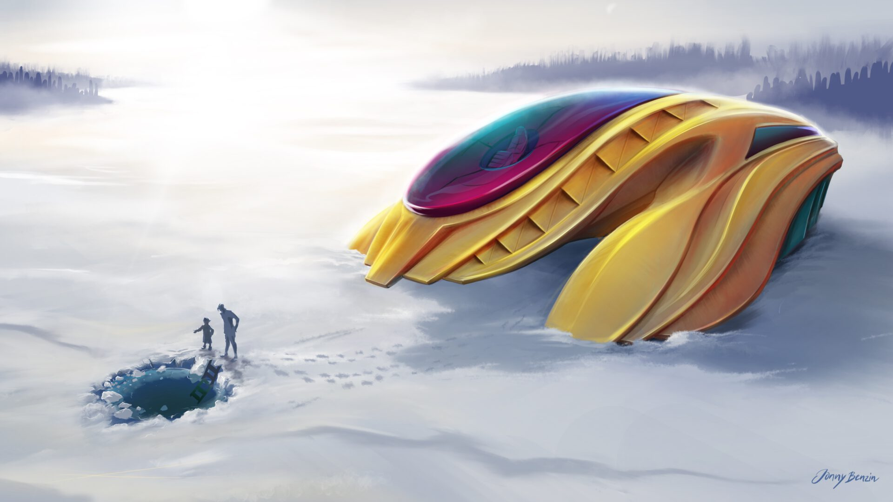
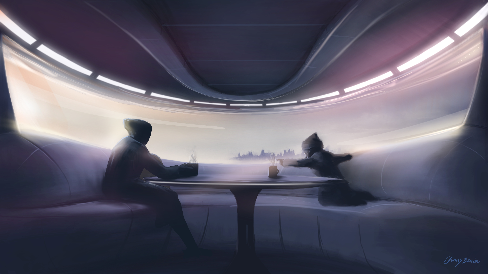
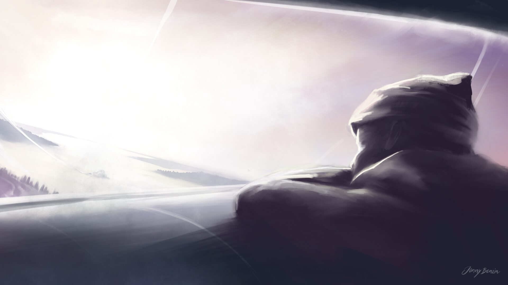
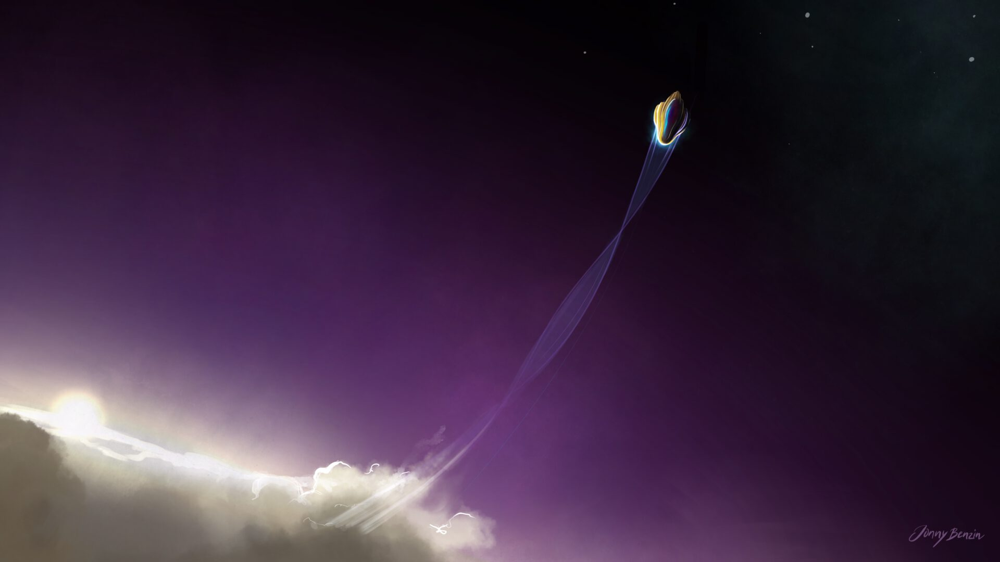
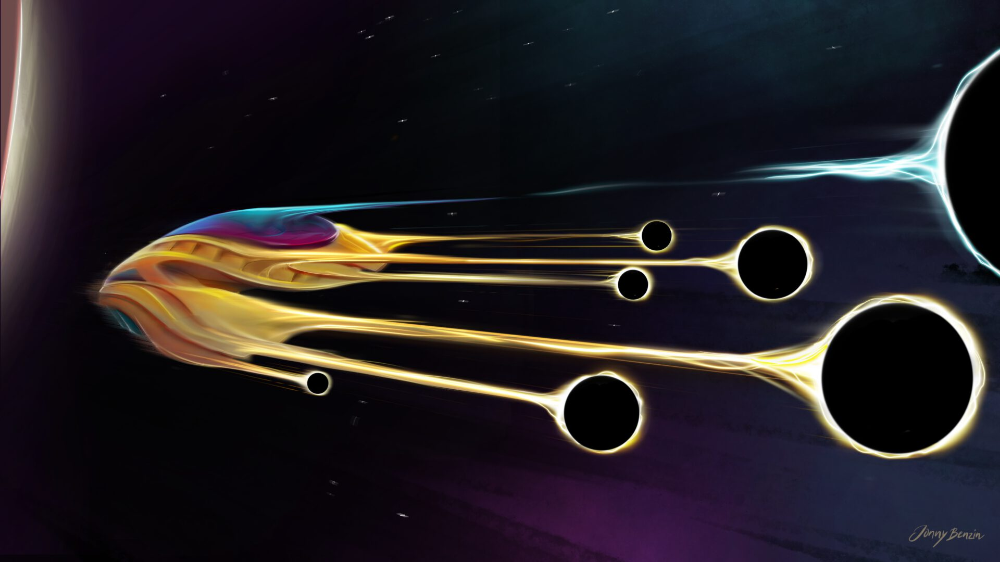
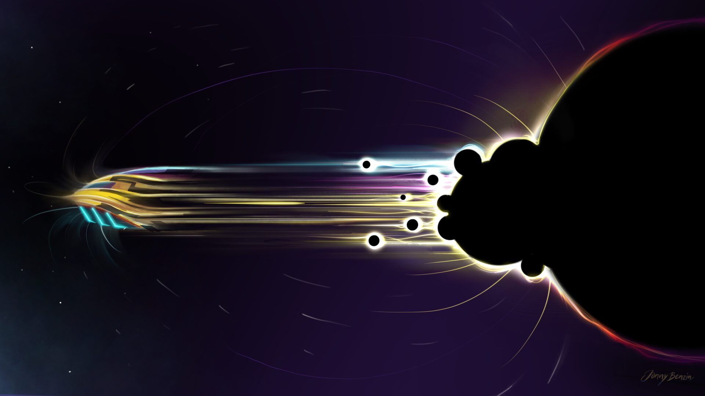
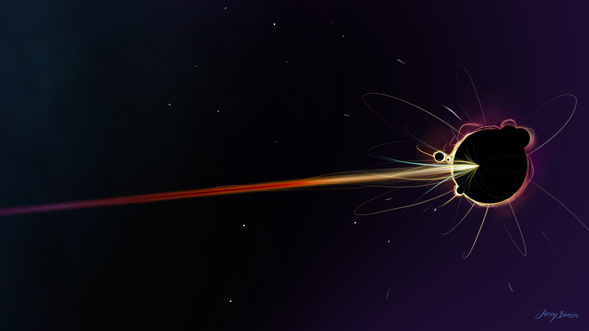

Maja and her uncle Achmed stopped by at Flåsjön, their favorite lake, for a short bath in the cold waters. Achmed is a bit hesitant so Maja promptly accuses him to be a “badkruka”.

View on Flåsjön

Warming up in the ship with a hot chocolate. Maja spots an elk cow with her calf coming out of the forrest.

Lift off! On the way home.

Reaching outer space.

Spin foam manipulation is activated.

Quasi black holes transmit information/matter quanta via spin network to destination coordinates.

Transmission is completed, indicated by the typical gamma ray burst.